Indomie History
Instant noodles were first introduced and marketed in 1958 in Japan. Due to its practicality and delicious taste, instant noodles were well received and liked by the Japanese. Soon after, its popularity spread throughout the world including Indonesia.
Indomie instant noodles brand was first launched in 1972 with Indomie Chicken flavour. In 1982, Indomie launched Mi Goreng, the first dry noodles variant (consumed without broth), inspired by the traditional Indonesian fried noodles dish. Indomie Mi Goreng quickly became very popular and broke through the instant noodles market. Indomie has since become a household brand name in Indonesia and holds the majority of market share in Indonesia.
Hard work, perseverance, and innovation were the key factors that made Indomie flourish to be the most chosen instant noodles in Indonesia (Kantar Worldpanel, 2018). After more than four decades, Indomie still holds those values dearly and maintains its reputable standing.